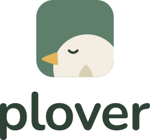

01 · Horizontal

Word height: 81% of the symbol. Gap: 19% of the symbol width.
The complete word silhouette, including the p descender, is centred beside the bird.
02 · Stacked

The symbol is just over half the word’s width.
Same generous gap, with the name centred below.